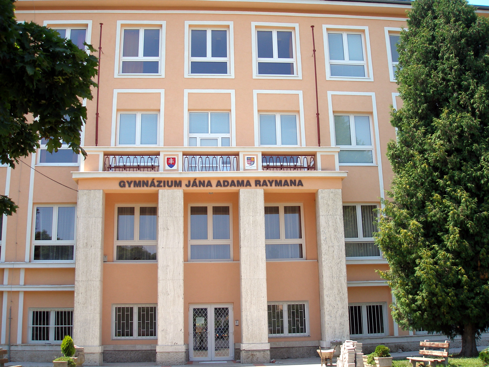

Gjar
Chodím na Gymnázium Jána Adama Raymana v Prešove na 8-ročné gymnázium.
Gymnázium Jána Adama Raymana (názov sa obvykle používa vo forme iniciálovej skratky „GJAR“; obyvatelia Prešova školu poznajú aj ako „dolné gymko“) je strednou školou (gymnáziom) so sídlom v Prešove.
V súčasnosti poskytuje gymnaziálne vzdelávanie štvorročné i osemročné. Je považované za jedno z najlepších gymnázií v regióne i na Slovensku.
V roku 1997 sa škola presťahovala do nových priestorov na Ul. Mudroňovej, ktoré boli v rokoch 2008 – 2009 zásadne renovované.
